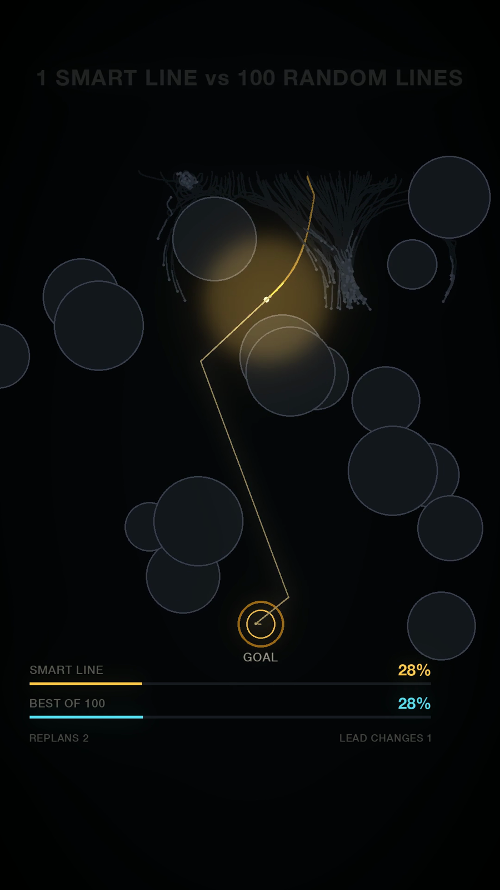
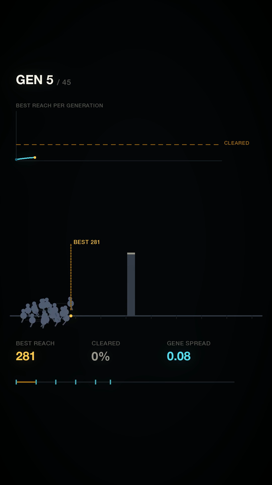
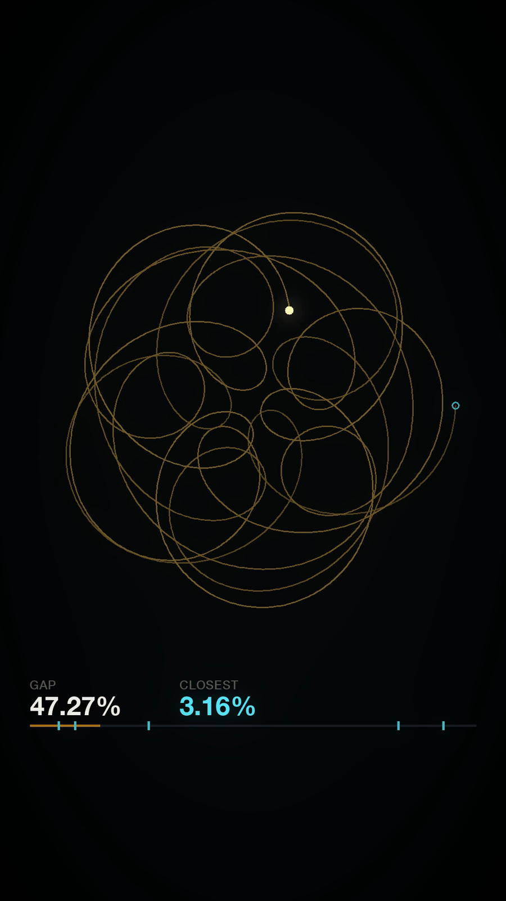

2026 · Motion · Series of seven
Impossible Systems Lab
Seven simulation films that each pose a question and then run the experiment on screen. A machine that has to repair itself. One smart line against a hundred random ones. Whether evolution can build a bridge. The point of the series is that they all share a single visual system, so any one of them is recognisable as part of the set within a second.
One system, seven experiments
Each film is a different simulation, but none of them gets its own look. The constraint was that the design had to survive whatever the experiment produced — a swarm, a graph, a bridge under load — without ever being redrawn.
- The title is a question. "This machine has to repair itself." "Will the golden flower ever close?" "Can 100 creatures learn to jump?" Set in wide-tracked caps at the top of frame, it doubles as the hook and the premise.
- Amber is the subject, cyan is the comparison. Two accents, fixed roles across all seven films. Whenever two things race, you already know which is which.
- Live metrics along the bottom. Percentages, generation counters, step numbers — updating in real time, so the viewer can verify the claim rather than take it on trust.
- Black field, thin strokes. Hairline geometry on pure black keeps the frame legible at phone size and makes the amber read as emitted light.



Why a system beat seven good-looking films
Individually these are simulations, which is a genre with no shortage of entries. What makes them a body of work is that the second film costs almost nothing to design once the first one exists: the title treatment, the accent roles and the metric bar are already decided, so each new experiment only has to answer its own question. That is the entire argument for designing a system before designing an episode.